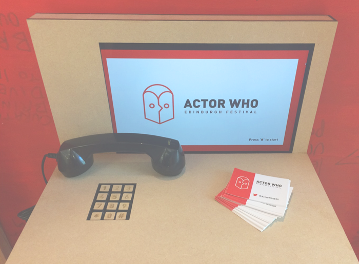

Actor Who captures the serendipitous spirit of the Edinburgh Festivals by repurposing the iconic yet outdated red UK telephone booths as audition booths. By posting the auditions on Twitter for voting, Actor Who allows anyone to participate in the Edinburgh Festivals, regardless of where they are. Actor Who recieved a Yellow Pencil by the D&AD for the BBC brief at the New Blood Awards.